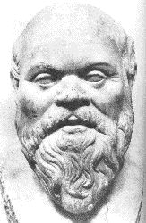

Socrates was not the kind of teacher who gave lectures. His method, aptly named the Socratic method, was to ask many questions in such a way to draw out of his pupil's knowledge which he was convinced they already had. He took them step by step through a journey of philosophical discovery. The pupil had to work just as hard as the teacher, and in the end would come up with the answer himself. In this vein, Socrates called himself a philosophical "midwife" who would bring about the birth of new ideas in others.
It is with this same belief that the Elementary Education Department at Ricks College strives to assist students in becoming self-directed, life long learners. To better understand, visit our department's Mission Statement.